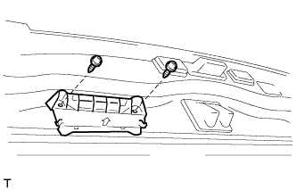

TELEVISION CAMERA > INSTALLATION |
| 1. INSTALL REAR TELEVISION CAMERA ASSEMBLY |
Connect the connector.
Attach the 4 claws to install the rear television camera assembly.
 |
Using a T30 "TORX" socket wrench, install the rear television camera with the 2 screws.
| 2. INSTALL BACK DOOR GARNISH |
 |
Install the back door grip with the 2 screws.
| 3. INSTALL BACK DOOR SIDE GARNISH LH |
 |
Attach the 3 clips to install the back door side garnish.
| 4. INSTALL BACK DOOR SIDE GARNISH RH |
| 5. INSTALL CENTER BACK DOOR GARNISH |
 |
Attach the 5 clips and 2 claws to install the back door garnish.
| 6. ADJUST REAR TELEVISION CAMERA ASSEMBLY (w/ Parking Assist Monitor System) |
Adjust the rear television camera assembly (Click here).